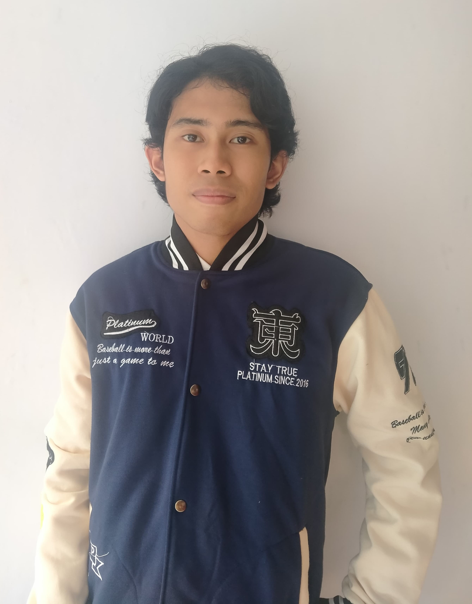
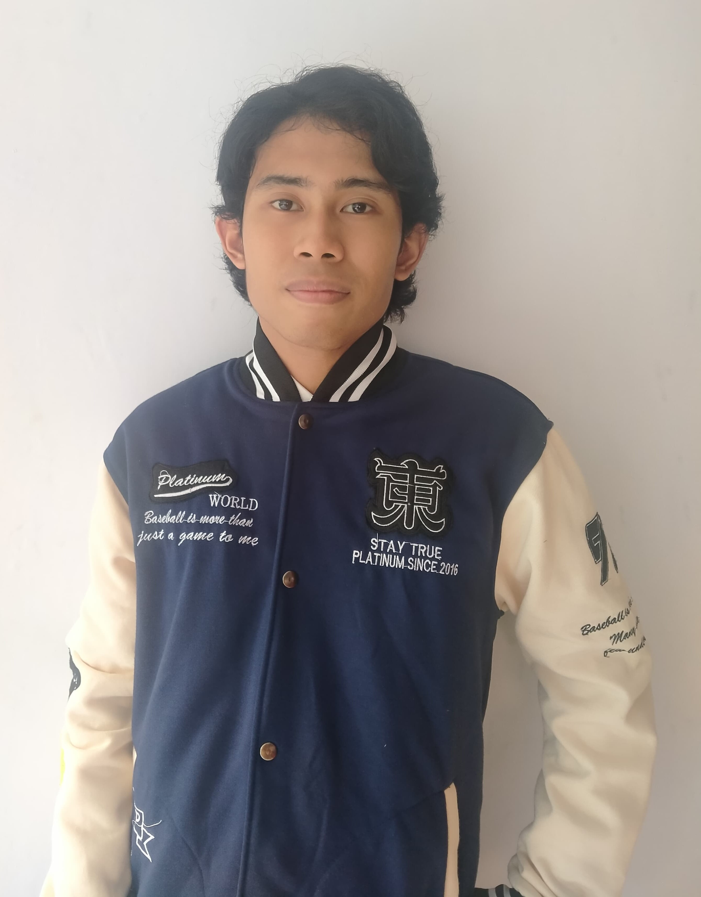

About Me
Sebagai seorang remaja yang sangat tertarik dengan coding, saya memanfaatkan kesempatan untuk menggabungkan kreativitas dengan fungsionalitas. Setiap baris kode yang saya tulis adalah kanvas bagi saya untuk mengekspresikan diri dan menciptakan pengalaman digital yang berkesan. Terlibat dengan komunitas coding tidak hanya menambah antusiasme saya tetapi juga menawarkan peluang berharga untuk kolaborasi dan pertumbuhan. Komitmen saya terletak pada pembuatan antarmuka pengguna intuitif yang memberikan dampak jangka panjang, karena mengetahui bahwa setiap proyek memiliki potensi untuk membentuk dunia digital dengan cara yang bermakna.